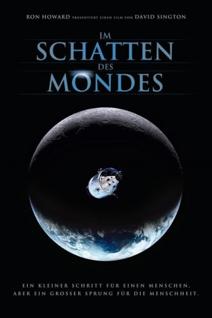

#470 Im Schatten des Mondes
Alternativ: In the Shadow of the Moon
 
 IMDB-Wertung: 8.1 / 10
IMDB-Wertung: 8.1 / 10  Metascore: 84
Metascore: 84 
David Sington lässt in seinem Dokumentarfilm „In The Shadow Of The Moon“ acht der noch lebenden Astronauten des Apollo-Raumfahrtprogramms der NASA über ihre Erlebnisse auf und auf dem Weg zum Mond berichten und ergänzt diese emotionalen Schilderungen mit teils komplett neuen, teils spektakulär remasterten Archivbildern. Im Kern der Dokumentation über die insgesamt neun Apollo-Missionen (8 bis 17, zwischen 1969 und 1972) steht die Apollo-11-Mission, während die berühmte Apollo-13-Mission nur kurz erwähnt wird.
Jahr: 2007
Dauer: 100 Minuten
FSK: 0
Land: England Studio: PolybandTonspuren: DTS - ,
Untertitel:
Auflösung: 1080p (1920x1080) Größe: 12697 MB
Genre: Dokumentation, Geschichte
Regisseur: David Sington
Drehbuch:
Soundtrack: Philip Sheppard
Darsteller:
 Buzz Aldrin als Himself
Buzz Aldrin als Himself- Neil Armstrong als Himself , archive footage
- Eugene Cernan als Himself
 John F. Kennedy als Himself , archive footage
John F. Kennedy als Himself , archive footage- Jim Lovell als Himself
 Walter Cronkite als Himself , archive footage, uncredited
Walter Cronkite als Himself , archive footage, uncredited Lyndon Johnson als Himself , archive footage, uncredited
Lyndon Johnson als Himself , archive footage, uncredited- Queen Elizabeth II als Herself , archive footage, uncredited
- Stephen Armstrong als Himself , archive footage
- Viola Armstrong als Herself , archive footage
- Alan Bean als Himself
- Michael Collins als Himself
- Charles Duke als Himself
- Edgar D. Mitchell als Himself
- Garry Moore als Himself , archive footage
- Harrison Schmitt als Himself
- Dave Scott als Himself
 John Young als Himself
John Young als Himself- Harry Kramer als Himself - CBS Announcer , archive sound, uncredited
- Sam Rayburn als Himself - in Congress, beside Vice President Lyndon Johnson , archive footage, uncredited
Datei: X:\Dokumentationen\Weltraum\Im Schatten des Mondes (2007, FSK, 1920x1080).mkv seit 27.02.2015
Festplatte: HD Serien(SU-Z)+Dokus+Musik
 Es gibt insgesamt 22 Filme in der Gruppe 'Dokumentationen\Weltraum'
Es gibt insgesamt 22 Filme in der Gruppe 'Dokumentationen\Weltraum'